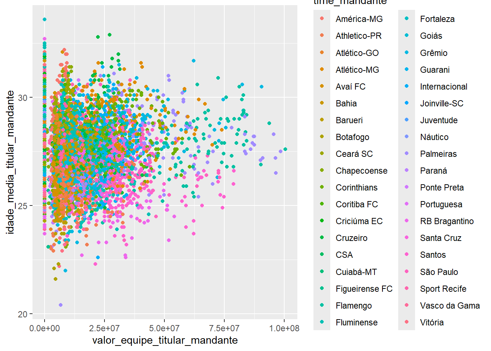
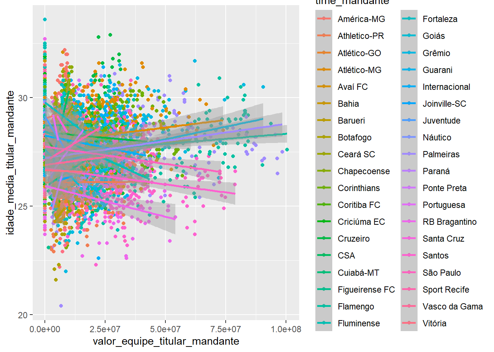
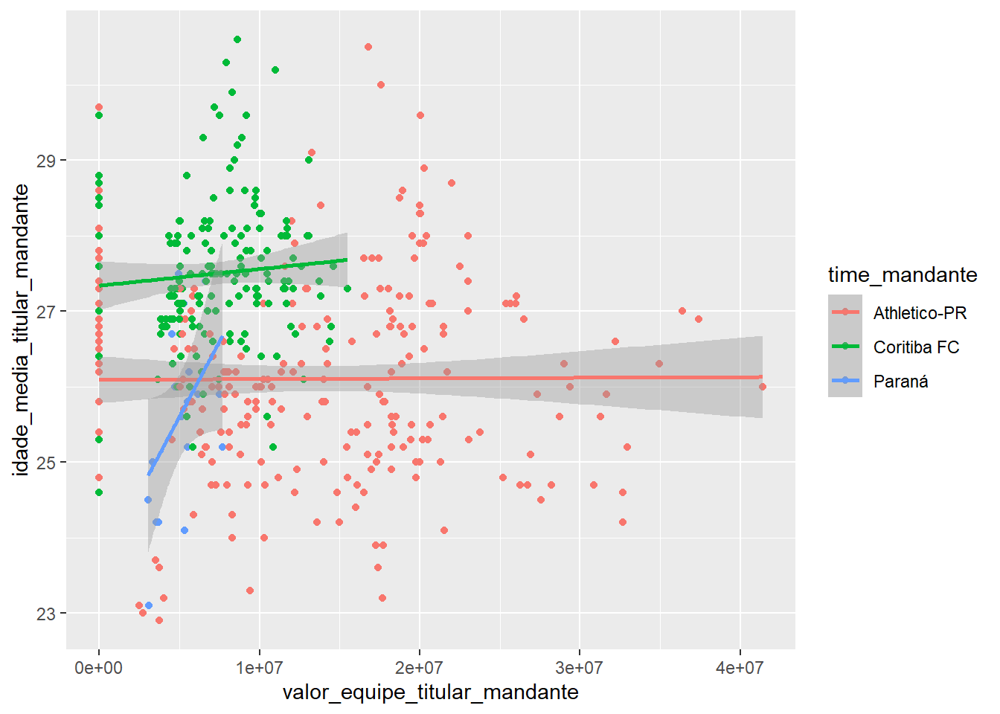
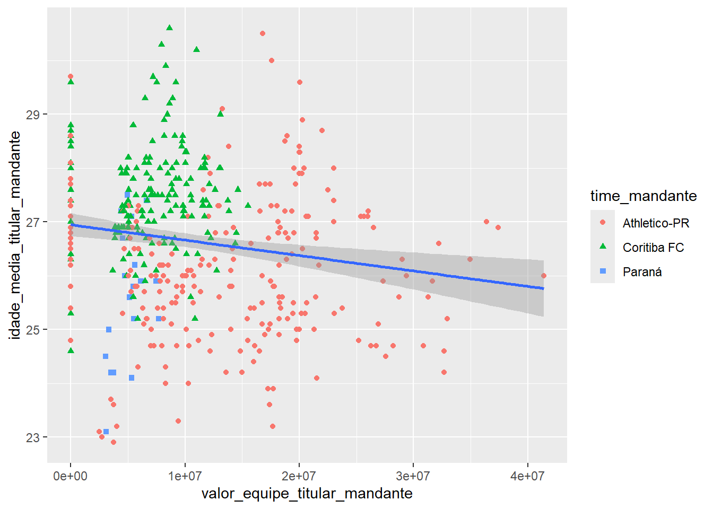
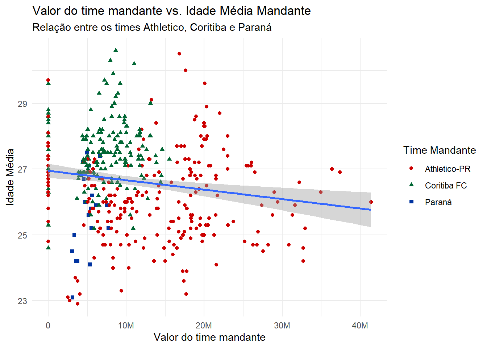
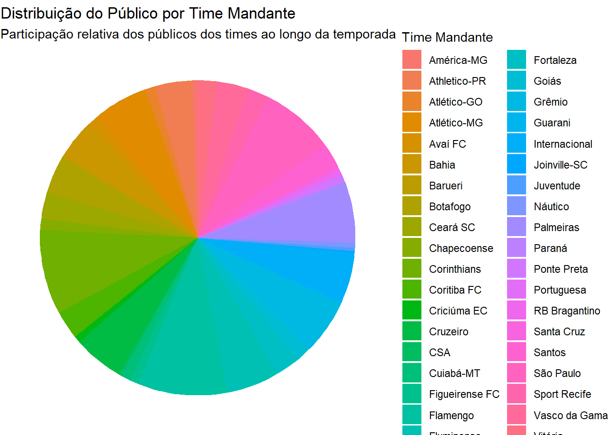
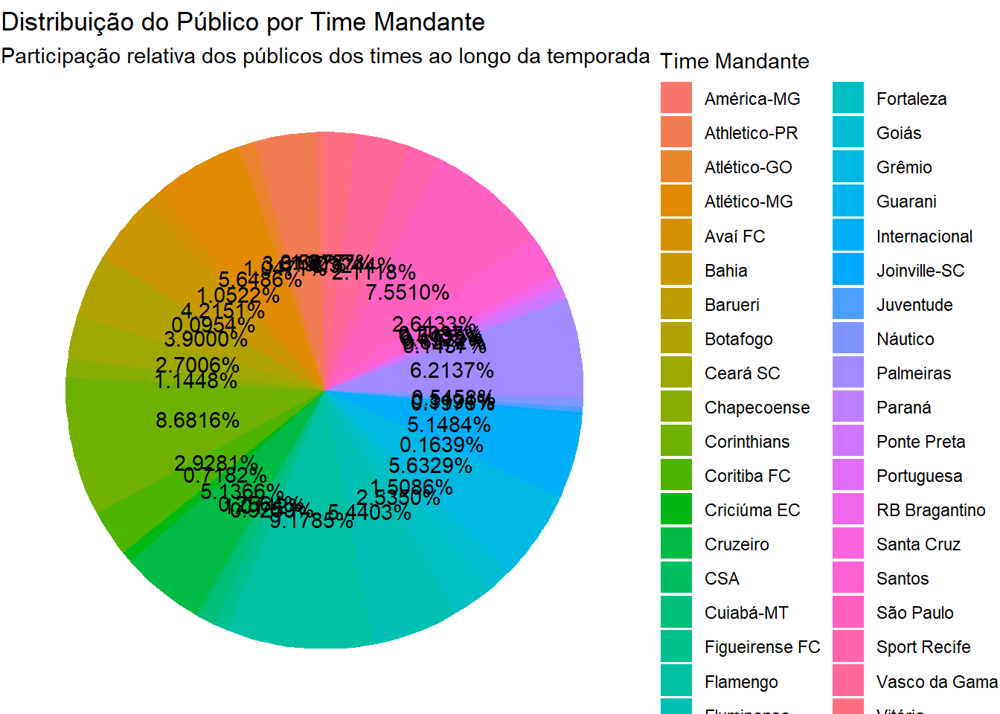
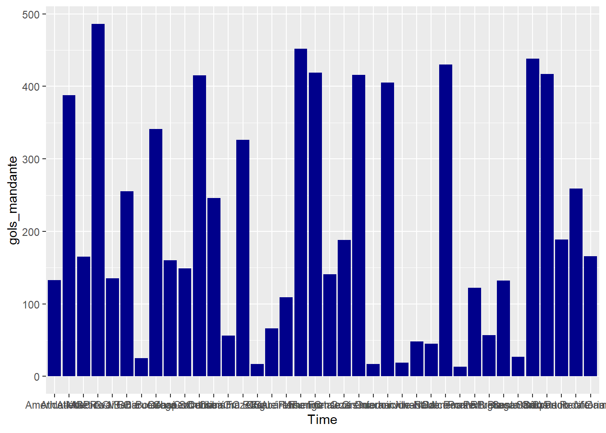
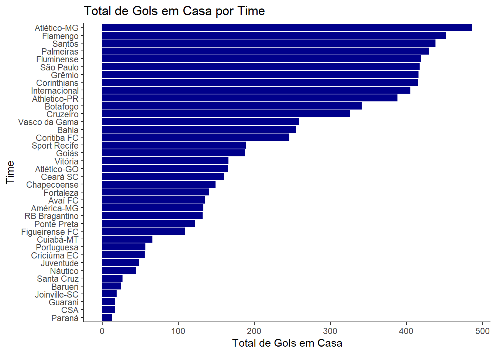

O Gráfico de Dispersão exibe a relação entre duas variáveis numéricas em um conjunto de dados. Cada ponto no gráfico representa uma observação, onde a posição no eixo X indica o valor de uma variável, e a posição no eixo Y indica o valor da outra variável. A disposição dos pontos pode revelar padrões, correlações ou até a ausência de uma relação clara entre as variáveis.
3.2.1 Utilidade
Identificação de relações entre variáveis: O gráfico de dispersão é útil para observar se duas variáveis estão correlacionadas (positivamente ou negativamente) ou se não há relação aparente entre elas.
Detecção de padrões e outliers: Ele também permite identificar padrões em conjuntos de dados, como tendências de aumento ou diminuição, além de destacar valores atípicos (outliers).
3.2.2 Exemplo de Aplicação
Ao gerar um gráfico de dispersão para comparar o valor do time mandante de um jogo com a idade média time mandante, você pode verificar se há uma tendência de que jogos com maior valor do time mandante são afetados pela idade média do time, ou se essa relação é inexistente. Além disso, valores muito distantes dos outros pontos podem ser identificados como possíveis outliers, como jogos com valor do time mandante excepcionalmente alto ou baixo.
3.2.3 Criando o gráfico
O primeiro passo é carregar o conjunto de dados que vai ser usado no gráfico, seguido da informação ao ggplot() dos dados devem ser visualmente representadas. O argumento mapping da função ggplot() define como as variáveis do seu conjunto de dados são mapeadas para as propriedades visuais (estéticas) do gráfico. O mapeamento é sempre definido dentro da função aes(), e os argumentos x e y de aes() especificam quais variáveis serão mapeadas para os eixos X e Y. No seu caso, vamos mapear valor do time mandante para o eixo X e idade média time mandante para o eixo Y.
Aqui está o resultado de adicionar esses mapeamentos:
R
library(ggplot2)ggplot( data =dados, mapping =aes(x =valor_equipe_titular_mandante, y =idade_media_titular_mandante))
O gráfico, embora vazio, apresenta uma estrutura — fica claro onde o valor do time mandante será exibido (no eixo X) e onde a idade média time mandante será exibida (no eixo Y). No entanto, os dados ainda não aparecem no gráfico, pois ainda não definimos como as observações serão representadas visualmente.
Para isso, precisamos definir um geom: o objeto geométrico que um gráfico usa para representar os dados. Esses objetos geométricos são disponibilizados no ggplot2 por meio de funções que começam com geom_. Por exemplo, gráficos de barras usam barras geométricas (geom_bar()), gráficos de linhas usam linhas geométricas (geom_line()), boxplots usam geoms de boxplot (geom_boxplot()), e gráficos de dispersão usam pontos geométricos (geom_point()).
A função geom_point() adiciona uma camada de pontos ao gráfico, criando um gráfico de dispersão. O ggplot2 possui várias funções geom_, cada uma adicionando um tipo diferente de camada ao gráfico.
Aqui está o código completo para criar o gráfico de dispersão de valor do time mandante versus idade média do mandante:
R
ggplot( data =dados, mapping =aes(x =valor_equipe_titular_mandante, y =idade_media_titular_mandante))+geom_point()
3.2.3.1 Adicionando mais camadas e estética
Gráficos de dispersão são úteis para mostrar a relação entre duas variáveis numéricas, mas também é interessante adicionar mais informações visuais para enriquecer o gráfico. Por exemplo, podemos incluir a cor dos pontos para indicar qual time mandante jogou. Podemos fazer isso modificando o mapeamento estético dentro da função aes().
R
ggplot( data =dados, mapping =aes(x =valor_equipe_titular_mandante, y =idade_media_titular_mandante, color =time_mandante))+geom_point()

Agora, cada ponto está colorido de acordo com o time mandante. Isso nos ajuda a visualizar se diferentes times apresentam diferentes padrões na relação entre o valor do time mandante e sua idade média.
3.2.3.2 Adicionando uma linha de tendência
Podemos adicionar uma linha de tendência para observar a relação entre o valor do time mandante e a idade média ao longo dos jogos. Para isso, usamos a função geom_smooth(), que adiciona uma curva de ajuste aos dados. Especificando method = "lm", pedimos uma linha de regressão linear.
R
ggplot( data =dados, mapping =aes(x =valor_equipe_titular_mandante, y =idade_media_titular_mandante, color =time_mandante))+geom_point()+geom_smooth(method ="lm")

Uma linha de tendência linear indica uma possível relação direta entre o valor da equipe e a idade média. Ou seja, pode-se interpretar se equipes mais caras tendem a ter jogadores mais experientes ou não.
3.2.3.3 Redução de Dados para Melhoria da Visualização
Quando trabalhamos com grandes conjuntos de dados, como informações detalhadas de várias equipes de futebol, pode ser difícil interpretar as relações entre variáveis devido à quantidade de informação. Para facilitar a análise e melhorar a visualização, é comum filtrar e reduzir os dados, focando em subsetores ou grupos de interesse.
Essa redução de dados ajuda a destacar padrões específicos e a melhorar a interpretação das informações visuais, tornando mais fácil identificar tendências e correlações significativas entre as variáveis escolhidas.
Desta forma, os dados serão reduzidos para uma amostra menor, filtrando 3 times específicos e removendo os valores NA, para que este valores não afetem na análise.
ano_campeonato data rodada estadio
Min. :2011 Length:298 Min. : 1.00 Length:298
1st Qu.:2015 Class :character 1st Qu.:10.00 Class :character
Median :2019 Mode :character Median :19.00 Mode :character
Mean :2018 Mean :19.33
3rd Qu.:2022 3rd Qu.:29.00
Max. :2024 Max. :38.00
publico time_mandante time_visitante tecnico_mandante
Min. : 0 Length:298 Length:298 Length:298
1st Qu.: 7629 Class :character Class :character Class :character
Median :13666 Mode :character Mode :character Mode :character
Mean :13578
3rd Qu.:19726
Max. :38059
tecnico_visitante colocacao_mandante colocacao_visitante
Length:298 Min. : 1.00 Min. : 1.00
Class :character 1st Qu.: 8.00 1st Qu.: 5.00
Mode :character Median :13.00 Median :10.00
Mean :12.57 Mean :10.38
3rd Qu.:18.00 3rd Qu.:16.00
Max. :20.00 Max. :20.00
valor_equipe_titular_mandante valor_equipe_titular_visitante
Min. : 1085 Min. : 853
1st Qu.: 4850000 1st Qu.: 5920000
Median : 8125000 Median :12575000
Mean :10204097 Mean :17323914
3rd Qu.:13850000 3rd Qu.:25000000
Max. :41400000 Max. :84500000
idade_media_titular_mandante idade_media_titular_visitante gols_mandante
Min. :23.10 Min. :20.50 Min. :0.000
1st Qu.:26.32 1st Qu.:26.40 1st Qu.:1.000
Median :27.10 Median :27.40 Median :1.000
Mean :27.02 Mean :27.37 Mean :1.303
3rd Qu.:27.77 3rd Qu.:28.50 3rd Qu.:2.000
Max. :30.60 Max. :31.90 Max. :5.000
NA's :1
gols_visitante gols_1_tempo_mandante gols_1_tempo_visitante
Min. :0.0000 Min. :0.0000 Min. :0.0000
1st Qu.:0.0000 1st Qu.:0.0000 1st Qu.:0.0000
Median :1.0000 Median :0.0000 Median :0.0000
Mean :0.9428 Mean :0.6342 Mean :0.4228
3rd Qu.:1.0000 3rd Qu.:1.0000 3rd Qu.:1.0000
Max. :4.0000 Max. :4.0000 Max. :3.0000
NA's :1
R
ggplot( data =dados_dispersao, mapping =aes(x =valor_equipe_titular_mandante, y =idade_media_titular_mandante, color =time_mandante))+geom_point()+geom_smooth(method ="lm")

Quando os mapeamentos estéticos são definidos dentro de ggplot(), no nível global, eles são passados para todas as camadas geométricas subsequentes do gráfico. No entanto, cada função geométrica no ggplot2 também pode aceitar um argumento mapping, o que permite mapeamentos estéticos locais que são adicionados aos mapeamentos herdados do nível global. Isso oferece uma flexibilidade adicional para controlar a aparência de diferentes partes do gráfico.
Por exemplo, se quisermos que os pontos sejam coloridos com base em uma variável categórica, mas não desejamos que a linha de tendência também seja separada por essa mesma variável, podemos especificar color = species apenas para geom_point(), mantendo o mapeamento da linha de tendência sem essa separação.
Isso permitirá que os pontos sejam coloridos de acordo com o time mandante, mas a linha de tendência será calculada com base nos dados completos, sem distinção de time.
R
ggplot( data =dados_dispersao, mapping =aes(x =valor_equipe_titular_mandante, y =idade_media_titular_mandante))+geom_point(mapping =aes(color =time_mandante))+geom_smooth(method ="lm")
Geralmente não é uma boa ideia representar informações usando apenas cores em um gráfico, pois as pessoas percebem as cores de maneira diferente devido ao daltonismo ou outras diferenças na visão das cores. Portanto, além da cor, também podemos mapear os times à estética da forma.
R
ggplot( data =dados_dispersao, mapping =aes(x =valor_equipe_titular_mandante, y =idade_media_titular_mandante))+geom_point(mapping =aes(color =time_mandante, shape =time_mandante))+geom_smooth(method ="lm")

3.2.3.4 Melhorando as labels e cores
Podemos refinar o gráfico melhorando as labels e utilizando uma paleta de cores mais adequada. Isso pode ser feito com a função labs() para ajustar os rótulos dos eixos e o título, e usando uma paleta de cores compatível com daltonismo para tornar o gráfico acessível.
R
library(scales)# Definindo as cores dos timescores_times<-c("Athletico-PR"="#CC0000", "Coritiba FC"="#006633", "Paraná"="#0033A0")ggplot( data =dados_dispersao, mapping =aes(x =valor_equipe_titular_mandante, y =idade_media_titular_mandante))+geom_point(mapping =aes(color =time_mandante, shape =time_mandante))+geom_smooth(method ="lm")+labs( title ="Valor do time mandante vs. Idade Média Mandante", subtitle ="Relação entre os times Athletico, Coritiba e Paraná", x ="Valor do time mandante", y ="Idade Média", color ="Time Mandante", shape ="Time Mandante")+scale_color_manual(values =cores_times)+scale_x_continuous(labels =label_number(scale_cut =cut_short_scale()))+theme_minimal()

Com isso, temos um gráfico completo que mostra a relação entre o valor do time mandante e a idade média time mandante, com uma linha de tendência, cores distintas para cada time, e rótulos claros para os eixos e a legenda.
Esse exemplo mostra passo a passo como criar e refinar um gráfico de dispersão usando o ggplot2, aplicando ao seu caso específico de valor do time mandante e idade média time mandante.
3.2.4 O que esse gráfico mostra:
Cada ponto no gráfico representa um jogo, com o valor do time mandante plotado no eixo X e a idade média time mandante no eixo Y.
Esse tipo de gráfico permite identificar qual a tendência do valor do time em relação a idade média dos jogadores.
3.3 Gráfico de Setores (Pizza)
O Gráfico de Setores também conhecido como gráfico de pizza, representa com setores circulares a distribuição dos dados entre diferentes categorias. O tamanho da fatia é proporcional à porcentagem dos dados da categoria correspondente entre o total. Pode ser útil quando há poucas categorias e a diferença proporcional é significativa entre uma categoria e outra. Se torna difícil de interpretar quando há um grande número de categorias ou quando as diferenças entre categorias são pouco significativas.
3.3.1 Utilidade
Comparação de proporções: O gráfico de setores é útil para visualizar como diferentes categorias contribuem para um todo, facilitando a identificação das maiores e menores categorias.
Distribuição visual: Ele também permite ver rapidamente qual categoria tem maior ou menor participação relativa dentro de um conjunto de dados.
3.3.2 Exemplo de Aplicação
Ao gerar um gráfico de setores para representar a participação de público entre diferentes times mandantes, você pode visualizar qual time atraiu o maior número de espectadores ao longo de uma temporada ou campeonato. Isso permite identificar times com grande apelo de público em comparação com outros.
3.3.3 Criando o Gráfico
O primeiro passo é carregar o conjunto de dados que vai ser utilizado no gráfico e calcular as proporções de cada categoria (neste caso, os times mandantes). Para isso, utilizamos funções que somam os valores do público por time mandante e calculam a proporção em relação ao total. A função ggplot() será utilizada para gerar o gráfico, e a visualização será baseada na função geom_bar() com a transformação coord_polar() para criar o gráfico de pizza.
Aqui está o código para criar o gráfico de setores:
R
dados_setores<-dados%>%group_by(time_mandante)%>%summarize(publico_total =sum(publico, na.rm =TRUE))%>%mutate(proporcao =publico_total/sum(publico_total))# Criando o gráfico de setoresggplot(dados_setores, aes(x ="", y =proporcao, fill =time_mandante))+geom_bar(stat ="identity", width =1)+coord_polar(theta ="y")+labs( title ="Distribuição do Público por Time Mandante", subtitle ="Participação relativa dos públicos dos times ao longo da temporada", fill ="Time Mandante")+theme_void()

O gráfico de setores gerado acima exibe a participação de cada time mandante no total de público ao longo do campeonato. A área de cada fatia representa a proporção de público atraída por aquele time. Quanto maior a fatia, maior a participação daquele time no total de público.
3.3.3.1 Melhorando a Visualização com Labels
Para melhorar a legibilidade do gráfico, podemos adicionar labels (rótulos) que mostrem a proporção exata de cada time diretamente nas fatias do gráfico.
R
ggplot(dados_setores, aes(x ="", y =proporcao, fill =time_mandante))+geom_bar(stat ="identity", width =1)+coord_polar(theta ="y")+geom_text(aes(label =scales::percent(proporcao)), position =position_stack(vjust =0.5))+labs( title ="Distribuição do Público por Time Mandante", subtitle ="Participação relativa dos públicos dos times ao longo da temporada", fill ="Time Mandante")+theme_void()

3.3.4 Redução de Dados para Melhoria da Visualização
Quando trabalhamos com muitos times ou categorias, um gráfico de setores pode se tornar confuso se houver muitas fatias pequenas. Para melhorar a legibilidade, é comum filtrar os dados para focar apenas nas principais categorias (como os 3 times com maior público) ou agrupar categorias menores em uma única fatia representando “Outros”.
R
dados_setores_reduzidos<-dados_setores%>%arrange(desc(proporcao))%>%mutate(time_mandante =ifelse(row_number()>3, "Outros", time_mandante))%>%group_by(time_mandante)%>%summarize(publico_total =sum(publico_total), proporcao =sum(proporcao))# Criando o gráfico de setores reduzidoggplot(dados_setores_reduzidos, aes(x ="", y =proporcao, fill =time_mandante))+geom_bar(stat ="identity", width =1)+coord_polar(theta ="y")+geom_text(aes(label =scales::percent(proporcao, accuracy =0.1)), position =position_stack(vjust =0.5))+labs( title ="Distribuição do Público por Time Mandante", subtitle ="Os 3 principais times em termos de público", fill ="Time Mandante")+scale_fill_brewer(palette ="Dark2")+theme_void()
O gráfico de setores é uma excelente ferramenta para visualizar a proporção de categorias dentro de um total. No contexto de público por time mandante, ele nos ajuda a identificar quais times atraíram a maior quantidade de público e qual é a participação relativa de cada um no total. Ao reduzir os dados e focar nas principais categorias, garantimos uma visualização mais limpa e eficiente.
Contudo, é importante ressaltar que o gráfico de setores nem sempre é a melhor opção para a visualização de dados, especialmente quando há muitas categorias ou quando as diferenças entre elas são pequenas. O uso de muitas fatias em um gráfico de setores pode dificultar a interpretação, já que a percepção humana não é precisa ao comparar áreas ou ângulos, tornando difícil identificar pequenas variações entre categorias. Além disso, gráficos de setores não são eficazes para exibir relações ou padrões entre as variáveis, sendo mais úteis em casos onde há poucas categorias com diferenças bem definidas.
Em cenários com muitas categorias ou quando os dados precisam de uma análise mais detalhada, outros tipos de gráficos, como gráficos de barras ou gráficos de linha, podem fornecer uma melhor representação visual, permitindo comparações mais claras e uma compreensão mais intuitiva dos dados.
3.4 Histogramas
Uma variável é considerada numérica (ou quantitativa) se ela pode assumir uma ampla gama de valores numéricos, sendo possível realizar operações como adição, subtração ou cálculo de médias com esses valores. As variáveis numéricas podem ser contínuas ou discretas.
Uma visualização comumente usada para distribuições de variáveis contínuas é o histograma. O histograma exibe a frequência com que diferentes intervalos de valores (conhecidos como bins) ocorrem em um conjunto de dados. Cada barra do histograma representa a quantidade de dados que se enquadra em um determinado intervalo, com barras mais altas indicando maior ocorrência de valores naquela faixa.
3.4.1 Utilidade
Verificação da qualidade dos dados: Histograma ajuda a identificar se há concentrações inesperadas ou valores atípicos (outliers) em certas faixas de dados.
Comparação de distribuições entre grupos: Comparar como diferentes grupos (por exemplo, times, rodadas) se distribuem em termos de variáveis como gols ou público.
3.4.2 Exemplo de Aplicação
Ao gerar um histograma para a idade média do time mandante, é possível visualizar a distribuição das faixas etárias, permitindo identificar a frequência dos resultados mais comuns e observar tendências, como se há mais jogadores jovens ou experientes.
3.4.3 Criando o gráfico
A escolha do tamanho dos bins pode influenciar significativamente a interpretação do gráfico. Bins muito grandes podem esconder detalhes importantes da distribuição, enquanto bins muito pequenos podem criar um gráfico fragmentado e difícil de interpretar. Portanto, é essencial escolher adequadamente o tamanho dos bins para obter uma visualização precisa e útil.
Desta forma, fazendo uma representação com bins de tamanho variados, temos o seguinte resultado:
Ao testar diferentes intervalos, você pode interpretar qual o tamanho de bin mais adequado para sua análise e para uma representação gráfica clara e compreensível.
3.4.3.1 Filtrando os dados para exibir um campeonato específico
Para esta análise, será tomado como base um ano específico, neste caso, focando o campeonato realizado no ano de 2020:
R
histograma<-dados%>%filter(ano_campeonato==2020)%>%group_by(time_mandante)%>%summarize( idade_media_titular_mandante =mean(idade_media_titular_mandante, na.rm =TRUE))ggplot(histograma, aes(x =idade_media_titular_mandante))+geom_histogram(binwidth =1, fill ="blue", color ="black")+labs(title ="Distribuição das médias de idade dos titulares", x ="Média de idade dos titulares", y ="Frequência")+theme_light()
3.4.3.2 Comparando a distribuição ao longo dos anos
Alternativamente, em vez de visualizar para um ano específico, ou apenas o acumulado, podemos gerar em uma mesma visualização o histograma da média de idade para cada ano, utilizando um facets.
R
ggplot(dados)+geom_histogram(mapping =aes(x =idade_media_titular_mandante),binwidth =1, fill ="blue", color ="black")+facet_wrap(~ano_campeonato)+labs(title ="Distribuição das médias de idade dos titulares", x ="Média de idade dos titulares", y ="Frequência")+theme_bw()
Neste gráfico, cada faceta mostra a distribuição das idades médias dos jogadores mandantes por ano. Barras mais altas indicam maior frequência de jogadores dentro de determinadas faixas etárias. Esse tipo de análise pode ajudar a entender mudanças na composição dos times ao longo das temporadas, como uma tendência de escalar jogadores mais jovens ou mais experientes.
3.5 Gráfico de Barras
Uma variável é categórica se ela só pode assumir um de um pequeno conjunto de valores. Para examinar a distribuição de uma variável categórica, você pode usar um gráfico de barras. A altura das barras exibe quantas observações ocorreram em cada valor da variável categórica.
O gráfico de barras é formado por barras retangulares, cada barra corresponde a uma categoria e tem comprimento proporcional ao valor que ela representa. As barras podem ser horizontais ou verticais. No caso de barras verticais, o gráfico também costuma ser chamado de gráfico de colunas.
3.5.1 Utilidade
Comparação entre categorias: O gráfico de barras permite uma comparação direta e fácil de interpretar entre valores de diferentes categorias, permitindo identificar tendências gerais.
3.5.2 Exemplo de Aplicação
Vamos visualizar em um gráfico de barras o total de gols feitos em casa por cada time mandante. Isso nos permitirá identificar quais times tiveram o melhor desempenho jogando como mandante.
3.5.3 Criando o gráfico
Primeiro, vamos agrupar os dados por time mandante e calcular a soma dos gols feitos em casa (gols do mandante). Além disso, renomearemos a coluna dos times para “Time” para facilitar o uso nos gráficos.
No ggplot, o gráfico de barras verticais é o padrão. Abaixo, criamos um gráfico de colunas simples para mostrar o total de gols feitos em casa por cada time:
R
ggplot(gols_barras, aes(x =Time, y =gols_mandante))+geom_bar(stat ="identity", fill ="darkblue")

3.5.3.2 Gráfico de barras horizontais
Quando o conjunto de dados possuir muitas colunas, o gráfico de barras horizontais pode ser a melhor opção, pois facilita a leitura dos rótulos. Vamos inverter o gráfico com a função coord_flip() e ordenar os times de acordo com o número de gols marcados:
R
ggplot(gols_barras, aes(x =reorder(Time, gols_mandante), y =gols_mandante))+geom_bar(stat ="identity", fill ="darkblue")+coord_flip()+labs(title ="Total de Gols em Casa por Time", x ="Time", y ="Total de Gols em Casa")+theme_classic()

3.5.3.2.1 Adicionando rótulo de dados
Agora, vamos adicionar o rótulos de dados diretamente nas barras, o que permite visualizar o valor exato de gols para cada time sem precisar deduzir o valor aproximado observando a altura da barra.
R
ggplot(gols_barras, aes(x =reorder(Time, gols_mandante), y =gols_mandante))+geom_bar(stat ="identity", fill ="darkblue")+geom_text(aes(label =gols_mandante), hjust =-0.1)+coord_flip()+labs(title ="Total de Gols em Casa por Time", x ="Time", y ="Total de Gols em Casa")+theme_classic()
3.5.3.3EXERCÍCIO Gráfico de Barras - Gols Fora de Casa
Agora podemos repetir o processo, mas desta vez para os gols feitos fora de casa por cada time visitante.